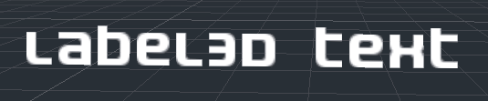
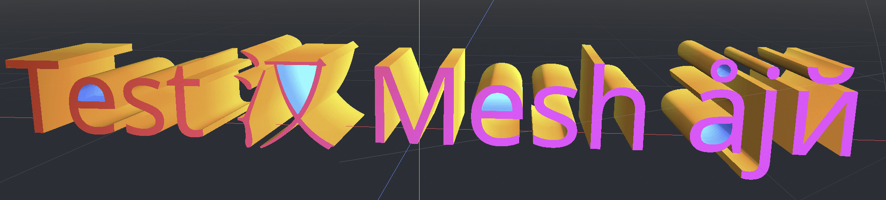

Văn bản 3D
Giới thiệu
Trong một dự án, đôi khi văn bản cần được tạo như một phần của scene 3D chứ không chỉ nằm trong HUD. Godot cung cấp 2 cách để làm điều này: node Label3D và resource TextMesh cho node MeshInstance3D.
Ngoài ra, Godot cho phép định vị các node Control theo vị trí của một điểm 3D trên camera. Cách này có thể dùng thay thế cho văn bản 3D "thực sự" trong những trường hợp Label3D và TextMesh không đủ linh hoạt.
Xem thêm
Bạn có thể xem văn bản 3D hoạt động thực tế qua dự án demo 3D Labels and Texts.
Trang này không đề cập đến cách hiển thị một scene GUI trong môi trường 3D. Để biết cách làm điều đó, hãy xem dự án demo GUI in 3D.
Label3D

Label3D hoạt động giống node Label nhưng trong không gian 3D. Khác với node Label, node Label3D không kế thừa các thuộc tính của theme GUI. Tuy nhiên, giao diện của nó vẫn có thể tùy chỉnh và dùng cùng subresource font như các node Control (bao gồm hỗ trợ kết xuất font MSDF).
Ưu điểm
Label3D được tạo nhanh hơn TextMesh. Dù cả hai đều dùng cơ chế cache để chỉ kết xuất các glyph mới một lần, Label3D vẫn nhanh hơn khi (tái) tạo, đặc biệt với văn bản dài. Điều này có thể tránh giật hình trong khi chơi trên CPU cấu hình thấp hoặc thiết bị di động.
Label3D có thể dùng bitmap font và dynamic font (có hoặc không có MSDF hay mipmap). Điều này giúp nó linh hoạt hơn TextMesh ở khía cạnh này, đặc biệt khi kết xuất font có đường viền tự giao nhau hoặc font màu (emoji).
Xem thêm
Xem Sử dụng font để biết hướng dẫn cấu hình import font.
Hạn chế
Theo mặc định, Label3D có khả năng tương tác hạn chế với môi trường 3D. Nó có thể bị hình học che khuất và được các nguồn sáng chiếu sáng nếu cờ Shaded được bật. Tuy nhiên, nó sẽ không đổ bóng ngay cả khi Cast Shadow được đặt thành On trong thuộc tính GeometryInstance3D của Label3D. Lý do là node này nội bộ tạo ra một quad mesh (mỗi glyph một quad) với texture trong suốt và có cùng giới hạn như Sprite3D. Các vấn đề sắp xếp độ trong suốt cũng có thể lộ rõ khi nhiều Label3D chồng lên nhau, đặc biệt nếu chúng có đường viền.
Có thể giảm thiểu điều này bằng cách đặt chế độ trong suốt của Label3D thành Alpha Cut, đổi lại văn bản được kết xuất kém mượt hơn. Chế độ trong suốt Opaque Pre-Pass có thể giữ độ mượt của văn bản đồng thời cho phép Label3D đổ bóng, nhưng vẫn còn một số vấn đề sắp xếp độ trong suốt.
Xem mục Sắp xếp độ trong suốt trong trang các giới hạn của kết xuất 3D để biết thêm thông tin.
Chất lượng kết xuất văn bản cũng có thể giảm khi Label3D được nhìn từ xa. Để cải thiện chất lượng kết xuất văn bản, hãy bật mipmap cho font hoặc chuyển font sang dùng kết xuất MSDF.
TextMesh

Resource TextMesh có điểm tương đồng với Label3D. Cả hai đều hiển thị văn bản trong scene 3D và dùng cùng subresource font. Tuy nhiên, thay vì tạo các quad trong suốt, TextMesh tạo hình học 3D biểu diễn đường viền của các glyph và có các thuộc tính của một mesh. Do đó, TextMesh được tô bóng theo mặc định và tự động đổ bóng lên môi trường. TextMesh cũng có thể được áp dụng material (bao gồm shader tùy chỉnh).
Dưới đây là ví dụ về một texture và cách nó được áp dụng lên mesh. Bạn có thể dùng texture bên dưới làm tham chiếu cho UV map của mesh được tạo ra:


Ưu điểm
TextMesh có một vài ưu điểm so với Label3D:
TextMesh có thể dùng texture để thay đổi màu văn bản theo từng mặt.
Hình học của TextMesh có thể có độ sâu thực sự, giúp các glyph trông 3D.
TextMesh có thể dùng shader tùy chỉnh, khác với Label3D.
Hạn chế
TextMesh có một số hạn chế:
Không có hỗ trợ đường viền tích hợp sẵn, khác với Label3D. Tuy vậy, có thể mô phỏng điều này bằng shader tùy chỉnh.
Chỉ hỗ trợ dynamic font (
.ttf,.otf,.woff,.woff2). Bitmap font ở định dạng.fnthoặc.fontkhông được hỗ trợ.Font có đường viền tự giao nhau sẽ không được kết xuất đúng. Nếu bạn thấy vấn đề kết xuất với font tải về từ các trang như Google Fonts, hãy thử tải font từ trang web chính thức của tác giả font.
Khử răng cưa cho việc kết xuất văn bản yêu cầu bật một phương pháp khử răng cưa toàn cảnh như MSAA, FXAA và khử răng cưa theo thời gian (TAA). Nếu không bật phương pháp khử răng cưa nào, văn bản sẽ trông bị lổn nhổn, đặc biệt khi nhìn từ xa. Xem Khử răng cưa 3D để biết thêm thông tin.
Node Label được chiếu (hoặc bất kỳ Control nào khác)
Còn một giải pháp cuối cùng phức tạp hơn để thiết lập nhưng mang lại sự linh hoạt cao nhất: chiếu một node 2D lên không gian 3D. Có thể làm điều này bằng giá trị trả về của phương thức unproject_position trên node Camera3D trong hàm _process() của script. Giá trị trả về này sau đó được dùng để đặt thuộc tính position của một node Control.
Xem demo 3D waypoints để có ví dụ về cách này.
Ưu điểm
Có thể dùng bất kỳ node Control nào, bao gồm Label, RichTextLabel hoặc thậm chí các node như Button. Điều này cho phép định dạng mạnh mẽ và tương tác GUI.
Cách tiếp cận dựa trên script cho phép hoàn toàn tự do trong việc định vị. Ví dụ, điều này giúp việc ghim các Control vào cạnh màn hình khi chúng ra khỏi màn hình dễ dàng hơn đáng kể (cho các điểm đánh dấu 3D trong game).
Theme của Control được tuân thủ. Điều này giúp tùy chỉnh dễ dàng hơn và áp dụng toàn cục cho dự án.
Hạn chế
Các Control được chiếu không thể bị hình học 3D che khuất theo bất kỳ cách nào. Bạn có thể dùng RayCast để ẩn hoàn toàn control nếu vị trí mục tiêu của nó bị một collider che khuất, nhưng cách này không cho phép ẩn một phần control phía sau bức tường.
Có thể thay đổi kích thước văn bản theo khoảng cách bằng cách điều chỉnh thuộc tính
scalecủa Control, nhưng cần làm thủ công. Label3D và TextMesh tự động xử lý việc này, đổi lại kém linh hoạt hơn (không thể đặt kích thước văn bản tối thiểu/tối đa theo pixel).Việc xử lý thay đổi độ phân giải và tỷ lệ khung hình phải được tính đến trong script, điều này có thể khá khó.
Nên dùng Label3D, TextMesh hay Control được chiếu?
Trong hầu hết các trường hợp, Label3D được khuyến nghị vì dễ thiết lập hơn và cho chất lượng kết xuất cao hơn (đặc biệt nếu khử răng cưa 3D bị tắt).
Với các trường hợp sử dụng nâng cao, TextMesh linh hoạt hơn vì cho phép tạo kiểu văn bản bằng shader tùy chỉnh. Shader tùy chỉnh cho phép sửa đổi hình học cuối cùng, chẳng hạn uốn cong văn bản dọc theo một bề mặt. Vì văn bản là hình học 3D thực sự, nó có thể tùy chọn có độ sâu và cũng có thể đóng góp vào chiếu sáng toàn cục (global illumination).
Nếu bạn cần các tính năng như BBCode hoặc hỗ trợ theme của Control, dùng node RichTextLabel được chiếu là cách duy nhất.